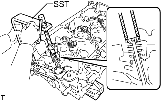

ГОЛОВКА БЛОКА ЦИЛИНДРОВ > РАЗБОРКА |
| 1. СНИМИТЕ ВПУСКНОЙ КЛАПАН |
 |
С помощью SST и деревянных брусков сожмите компрессионную пружину и извлеките замки тарелок клапанных пружин.
Снимите тарелку, компрессионную пружину и клапан.
| 2. СНИМИТЕ ВЫПУСКНОЙ КЛАПАН |
|  |
С помощью SST и деревянных брусков сожмите компрессионную пружину и извлеките замки тарелок клапанных пружин.
Снимите тарелку, компрессионную пружину и клапан.
| 3. СНИМИТЕ САЛЬНИК ШТОКА КЛАПАНА |
С помощью острогубцев снимите 16 сальников.
| 4. СНИМИТЕ ЧАШКУ ПРУЖИНЫ КЛАПАНА |
Снимите 16 чашек пружины клапана с головки блока цилиндров.
| 5. СНИМИТЕ РЕЗЬБОВУЮ ЗАГЛУШКУ № 1 С ГОЛОВКОЙ |
С помощью шестигранного гаечного ключа на 10 мм выверните 3 резьбовые заглушки и снимите 3 прокладки.
| 6. СНИМИТЕ РЕЗЬБОВУЮ ЗАГЛУШКУ № 2 С ГОЛОВКОЙ |
 |
С помощью шестигранного гаечного ключа на 19 мм отверните резьбовую заглушку и снимите прокладку.
| 7. СНИМИТЕ РЕЗЬБОВУЮ ШПИЛЬКУ |